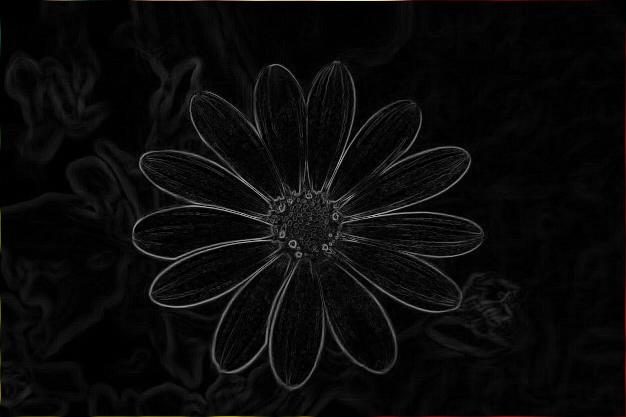
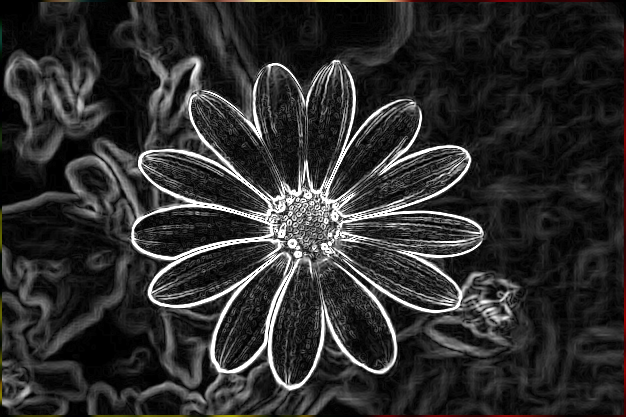

Limiari is an application developed
for processing one/multiple digital images.
It has some implementations, such as:
- In “File”:
- Open - Opens certain file(s) of type image.png to be processed in the program;
- Exit - Closes the program.
- In “Processing”:
- Grayscale - Changes the color bytes of the selected images to grayscale;
- Negative Scale - Changes the color bytes of the selected images to negative scale;
- Edges Detection - Detects edges in the color bytes of images using specific filters:
Robert Cross

Sobel
